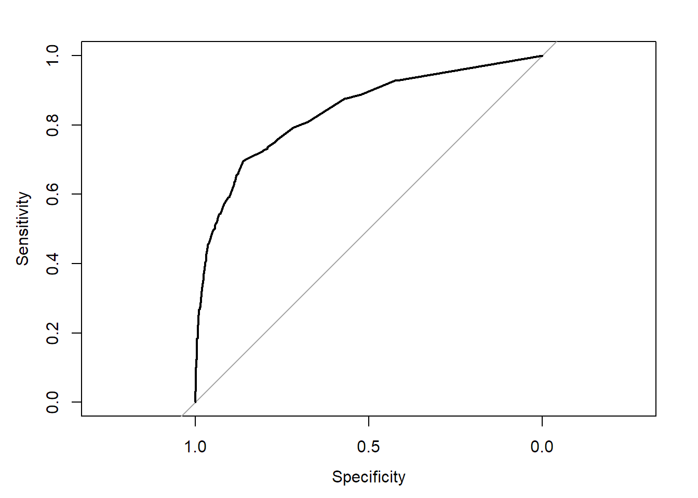

Logistic回帰の実装
パッケージの読み込み
今回はパッケージに付属のデータを用いる。
# 必要なパッケージの読み込み
library(ggplot2)
library(dplyr)
library(ggfortify)
library(DAAG)データの確認
# データの確認
data("head.injury")
summary(head.injury)## age.65 amnesia.before basal.skull.fracture GCS.decrease
## Min. :0.000 Min. :0.0000 Min. :0.00000 Min. :0.00000
## 1st Qu.:0.000 1st Qu.:0.0000 1st Qu.:0.00000 1st Qu.:0.00000
## Median :0.000 Median :0.0000 Median :0.00000 Median :0.00000
## Mean :0.116 Mean :0.2047 Mean :0.06985 Mean :0.02275
## 3rd Qu.:0.000 3rd Qu.:0.0000 3rd Qu.:0.00000 3rd Qu.:0.00000
## Max. :1.000 Max. :1.0000 Max. :1.00000 Max. :1.00000
## GCS.13 GCS.15.2hours high.risk loss.of.consciousness
## Min. :0.00000 Min. :0.0000 Min. :0.0000 Min. :0.0000
## 1st Qu.:0.00000 1st Qu.:0.0000 1st Qu.:0.0000 1st Qu.:0.0000
## Median :0.00000 Median :0.0000 Median :0.0000 Median :0.0000
## Mean :0.03749 Mean :0.1266 Mean :0.2429 Mean :0.1118
## 3rd Qu.:0.00000 3rd Qu.:0.0000 3rd Qu.:0.0000 3rd Qu.:0.0000
## Max. :1.00000 Max. :1.0000 Max. :1.0000 Max. :1.0000
## open.skull.fracture vomiting clinically.important.brain.injury
## Min. :0.00000 Min. :0.00000 Min. :0.0000
## 1st Qu.:0.00000 1st Qu.:0.00000 1st Qu.:0.0000
## Median :0.00000 Median :0.00000 Median :0.0000
## Mean :0.03685 Mean :0.09869 Mean :0.0801
## 3rd Qu.:0.00000 3rd Qu.:0.00000 3rd Qu.:0.0000
## Max. :1.00000 Max. :1.00000 Max. :1.0000str(head.injury)## 'data.frame': 3121 obs. of 11 variables:
## $ age.65 : num 0 0 0 0 0 0 0 0 1 0 ...
## $ amnesia.before : num 1 0 0 0 0 1 0 0 0 1 ...
## $ basal.skull.fracture : num 0 0 0 0 0 0 0 0 0 0 ...
## $ GCS.decrease : num 0 0 0 0 0 0 0 0 0 0 ...
## $ GCS.13 : num 0 0 0 0 0 0 0 0 0 0 ...
## $ GCS.15.2hours : num 0 0 0 1 1 0 0 0 0 0 ...
## $ high.risk : num 0 0 0 0 0 0 0 0 1 0 ...
## $ loss.of.consciousness : num 0 0 0 0 0 0 0 0 0 0 ...
## $ open.skull.fracture : num 0 0 0 0 0 0 0 0 0 0 ...
## $ vomiting : num 0 0 0 0 0 0 0 0 0 0 ...
## $ clinically.important.brain.injury: num 0 0 0 0 0 0 0 0 0 0 ...## 分布や欠損、各変数の型を確認しておく- DAAGパッケージに付属のデータセット
軽度の頭部外傷のデータセット
- 3121名、11列をもつ。
以下、変数名
age.65：0 = under 65, 1 = over 65
amnesia.before : 受傷前についての健忘(記憶があるか) amnesia before impact (less than 30 minutes = 0, more than 30 minutes =1).
basal.skull.fracture : 頭蓋亭骨折(0 = no fracture, 1 = fracture).
GCS.decrease : 意識レベル低下 Glasgow Coma Scale decrease (0 = no deterioration, 1 = deterioration).
GCS.13 : 最初の意識レベル initial Glasgow Coma Scale (0 = not ‘13’, 1 = ‘13’).
GCS.15.2hours : けがをして2時間後の意識レベル Glasgow Coma Scale after 2 hours (0 = not ‘15’, 1 = ‘15’).
high.risk : 神経学的な介入が必要かどうか医師による判断 assessed by clinician as high risk for neurological intervention (0 = not high risk, 1 = high risk).
loss.of.consciousness : 意識消失の有無(0 = conscious, 1 = loss of consciousness).
open.skull.fracture : 開放性頭蓋骨骨折(0 = no fracture, 1 = fracture)
vomiting : 嘔吐の有無(0 = no vomiting, 1 = vomiting)
clinically.important.brain.injury : CTで臨床的に重要な急性期の脳所見があるかどうか any acute brain finding revealed on CT (0 = not present, 1 = present).
Stiell, I.G., Wells, G.A., Vandemheen, K., Clement, C., Lesiuk, H., Laupacis, A., McKnight, R.D., Verbee, R., Brison, R., Cass, D., Eisenhauer, M., Greenberg, G.H., and Worthington, J. (2001) The Canadian CT Head Rule for Patients with Minor Head Injury, The Lancet. 357: 1391-1396.
＜今回のモデル＞
目的変数：CT所見に何か異常があるか
興味のある説明変数：健忘の有無
として多変量ロジスティック回帰モデルを作成する。
モデルの作成
# モデルの作成
# glm関数は一般化線形モデルに用いる関数で、familyで自分が使いたい分布を指定する。
#今回は二値変数がアウトカムなので二項分布に従い、リンク関数はlogitなので以下のようになる
model <- glm(clinically.important.brain.injury ~ amnesia.before + age.65 + GCS.decrease + GCS.15.2hours + GCS.13 + high.risk + loss.of.consciousness + vomiting,family = binomial(link = "logit"),data = head.injury)結果の確認
# モデルの結果確認
summary(model)##
## Call:
## glm(formula = clinically.important.brain.injury ~ amnesia.before +
## age.65 + GCS.decrease + GCS.15.2hours + GCS.13 + high.risk +
## loss.of.consciousness + vomiting, family = binomial(link = "logit"),
## data = head.injury)
##
## Deviance Residuals:
## Min 1Q Median 3Q Max
## -2.6149 -0.3355 -0.2339 -0.1734 2.9001
##
## Coefficients:
## Estimate Std. Error z value Pr(>|z|)
## (Intercept) -4.1904 0.1485 -28.211 < 2e-16 ***
## amnesia.before 0.6055 0.1656 3.656 0.000256 ***
## age.65 1.3412 0.1761 7.617 2.60e-14 ***
## GCS.decrease 0.3901 0.3573 1.092 0.274954
## GCS.15.2hours 1.9435 0.1598 12.164 < 2e-16 ***
## GCS.13 1.2985 0.2663 4.876 1.09e-06 ***
## high.risk 1.1237 0.1527 7.360 1.84e-13 ***
## loss.of.consciousness 0.8733 0.1926 4.534 5.78e-06 ***
## vomiting 1.2541 0.1865 6.724 1.77e-11 ***
## ---
## Signif. codes: 0 '***' 0.001 '**' 0.01 '*' 0.05 '.' 0.1 ' ' 1
##
## (Dispersion parameter for binomial family taken to be 1)
##
## Null deviance: 1741.6 on 3120 degrees of freedom
## Residual deviance: 1287.0 on 3112 degrees of freedom
## AIC: 1305
##
## Number of Fisher Scoring iterations: 6各変数の係数を確認する。
値をオッズ比へ変換する。
# オッズ比と95%信頼区間の確認
result_odds <- as.data.frame(cbind(exp(summary(model)$coefficient[,1]),exp(confint(model))
,summary(model)$coefficient[,4]))## Waiting for profiling to be done...# result_oddsというデータフレームの列名を名付ける
names(result_odds) <- c("Odds ratio","lower 95%CI","upper 95%CI","P value")
# 小数点２桁で結果を表示
round(result_odds,2)## Odds ratio lower 95%CI upper 95%CI P value
## (Intercept) 0.02 0.01 0.02 0.00
## amnesia.before 1.83 1.32 2.53 0.00
## age.65 3.82 2.70 5.39 0.00
## GCS.decrease 1.48 0.71 2.91 0.27
## GCS.15.2hours 6.98 5.10 9.56 0.00
## GCS.13 3.66 2.15 6.12 0.00
## high.risk 3.08 2.28 4.15 0.00
## loss.of.consciousness 2.39 1.63 3.47 0.00
## vomiting 3.50 2.42 5.03 0.00モデルの評価
library(pROC)## Type 'citation("pROC")' for a citation.##
## 次のパッケージを付け加えます: 'pROC'## 以下のオブジェクトは 'package:stats' からマスクされています:
##
## cov, smooth, varROC <- roc(response=head.injury$clinically.important.brain.injury, predictor=model$fitted.values)## Setting levels: control = 0, case = 1## Setting direction: controls < casesROC##
## Call:
## roc.default(response = head.injury$clinically.important.brain.injury, predictor = model$fitted.values)
##
## Data: model$fitted.values in 2871 controls (head.injury$clinically.important.brain.injury 0) < 250 cases (head.injury$clinically.important.brain.injury 1).
## Area under the curve: 0.8387plot(ROC)
ROC(C統計量)は0.837くらいで今回のモデルの当てはまりはよさそうである。
「怪我の前の記憶喪失(健忘)」と「CT所見に何かしら異常が見つかるか」の関係をみることが今回の目的であり、
最終結果はオッズ比 1.83, 95%CI 1.32 - 2.53となり、受傷時の健忘はCTの異常所見の発見に影響があると言える。